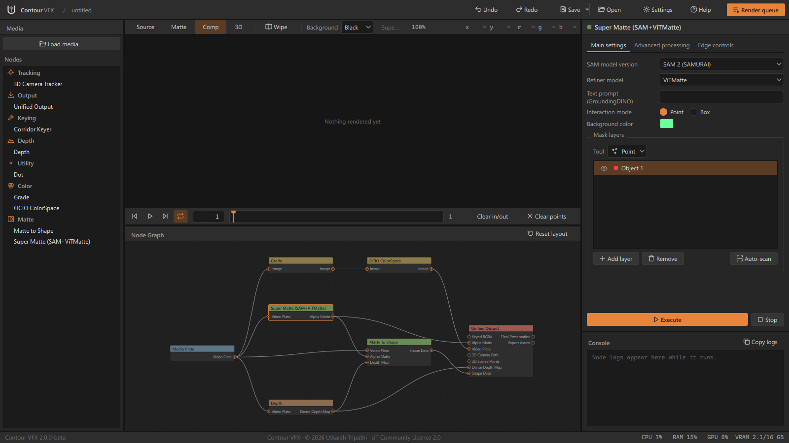
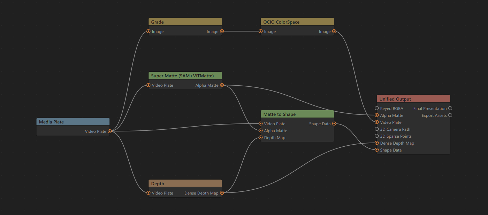
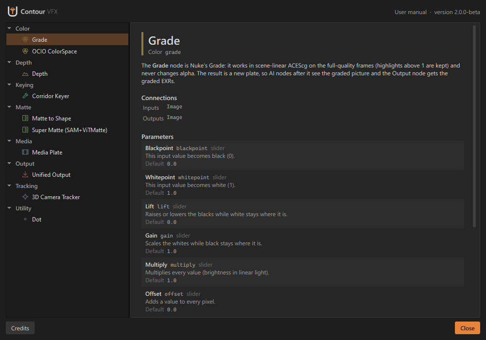
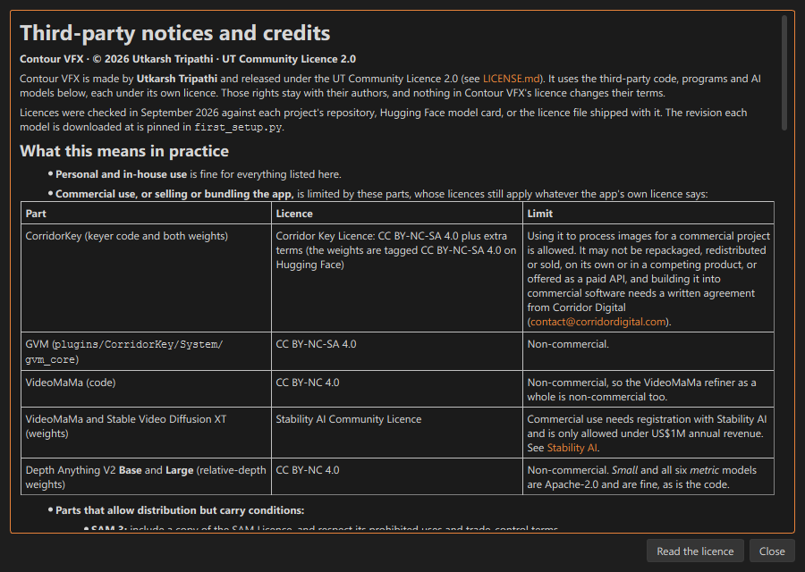
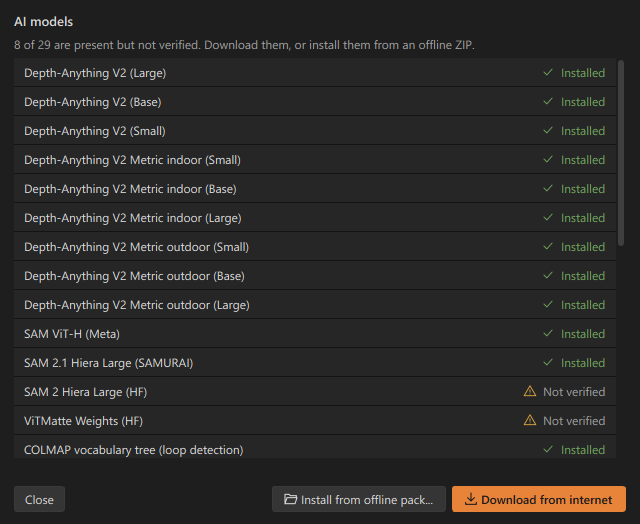
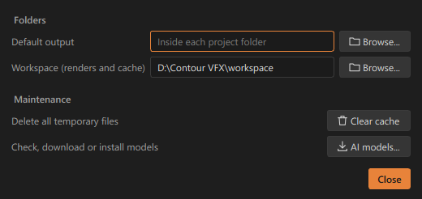

AI roto, mattes, keying, depth and camera tracking for compositors. Wire nodes together, render your plate, and take EXRs, roto shapes and a solved camera straight into Nuke or Blender.
Each job is a node. Wire them together, render, and deliver. Everything runs on your machine: after setup the app never downloads anything and never uploads a frame.
EXR, DPX, TIFF and PNG sequences or video. Keeps the original for delivery and makes a 16-bit display copy for the AI nodes; ACES, log and video colour spaces; optional half-size working copy for 4K.
Click, box or text prompts. SAM 1, SAM 2 (SAMURAI tracking) or SAM 3, refined into soft 16-bit mattes, one per layer.
Mattes become Nuke roto shapes whose points stay on the object, with feather. Outline mode for any object; body-parts mode cuts a person into head, torso and limbs, and limbs behind the body fade out using the depth map.
Depth Anything V2: stable relative depth (0–1 over the shot) or metric depth in metres, as float EXR.
A Nuke-style grade and OpenColorIO conversions in scene-linear, on the full-quality frames.
COLMAP 4.2 solve (global or incremental) with SIFT, LightGlue, ALIKED or LoMa features, and shot presets. Given a matte, it ignores moving objects.
Delivers everything: EXR layers (colour in ACEScg or another linear space, mattes in A, depth in Z), a camera for Nuke, Blender or USD, roto shapes, and a Nuke script with a Read per layer.
The ACES studio OpenColorIO config. The working space is ACEScg and the viewer uses the ACES SDR view. Highlights above 1.0 are kept.
Every file keeps the plate's own frame numbers: 1001 stays 1001. The timeline's In/Out limits every render.
Renders are cached per node and redone only when something upstream changes. Stop, Freeze and Bypass work as in Nuke.
Node list on the left, viewer and timeline in the middle, the node graph below, and the selected node's settings and console on the right.






Three nodes take you from a plate to a matte in Nuke or Blender.
_reads.nk in Nuke, or run the Blender import script for a camera. What gets written.Unified Output writes everything into its output folder, and every file keeps the plate's frame numbers.
| What | Where | How to use it |
|---|---|---|
| Plate, keyed RGBA, mattes, depth | <layer>\<shot>_<layer>.<frame>.exr | Mattes are in the alpha channel, depth in Z. |
| A Read for every layer, plus the Roto node | exports
uke\<shot>_reads.nk | Open it in Nuke, or import it into your script. The Contour_Roto node is wired under the plate's Read. |
| Roto shapes (Matte to Shape) | exports
uke\<shot>_roto.nk | Open it in a text editor, copy everything, click in Nuke's node graph and press Ctrl+V. A Roto node builds the animated shapes. |
| Camera and point cloud (3D Camera Tracker) | tracking\ | Nuke: open camera_track_nuke.nk (or load camera_track.chan into a Camera). Blender: open import_to_blender.py in the Scripting tab and click Run Script. |
| What was written | <shot>_export.json | Colour spaces and frame ranges of every layer. |
Colour layers (plate, keyed RGBA) are written in ACEScg by default. In Nuke, set Project Settings › Color › OCIO config to an ACES config, then set each colour Read's Input Transform to ACEScg. Mattes and depth are data: their Reads are set to raw, so leave them. The _reads.nk carries a note with the same steps.
Point Blender (for Alembic and .blend) on the Unified Output node at your blender.exe, and the camera is also written as tracking\camera_track.abc and tracking\camera_track.blend.
The AI nodes run on an NVIDIA graphics card through PyTorch 2.5.1 with CUDA 12.1.
Windows 10 or 11, 64-bit. Installs for your user only; no administrator rights needed.
Driver 531 or newer (CUDA 12.1); the newest Studio or Game Ready driver is best. Without an NVIDIA card the AI nodes cannot run at a usable speed.
About 40 GB free: about 6 GB for the app, 24 GB for the AI models, and room for renders.
Not supported on the GPU yet: this PyTorch has no code for Blackwell cards. The app tells you, then runs the AI nodes on the CPU, which is very slow. Support is planned for a later version.
| Node | Rough VRAM (HD plates) |
|---|---|
| Media Plate, Grade, OCIO ColorSpace, Matte to Shape, Unified Output | little or none |
| Depth | ≈ 2–4 GB Small to Large model; more with a bigger Detail setting |
| Super Matte: SAM 1, SAM 2 (SAMURAI) or SAM 3, with ViTMatte or MEMatte | ≈ 6–8 GB |
| Super Matte with the VideoMaMa refiner | > 16 GB |
| Corridor Keyer | ≈ 10 GB at Processing Resolution 2048; much more at 4096 |
| 3D Camera Tracker (COLMAP) | ≈ 2–4 GB |
In short: 8 GB is enough for most nodes on HD plates, 12 GB or more is comfortable, and VideoMaMa wants a 24 GB card. These are rough guides from the model sizes and the project's notes, not tests on every card; bigger plates and higher settings need more. The app's footer shows the card's VRAM use while you work.
The installer holds the app and its Python environment. The AI models (about 24 GB) are not in it: some model licences do not allow sharing them, so they are downloaded from their official sources during setup.
.exe and the .bin file(s) next to it..exe. It installs to %LOCALAPPDATA%\Programs\Contour VFX for your user only, with no admin rights.Already have an earlier 2.x version with its models? Install over it: the models are kept.
.bin files beside it.For PCs without internet. On a PC that has the models, build\BUILD.bat models writes 2 GB ZIP parts (ContourVFX_Models_2.2.0-beta.zip.001, .002, …). Install them from the installer's Offline models page, AI models › Install from offline pack in the app, or option 3 of FIRST_SETUP.bat. Every file is checked against its SHA-256.
The pack is for your own computers only: please don't upload it, because some model licences forbid that.
Everything else works without them.
Contour VFX is under the UT Community Licence 2.0. The AI models it runs keep their own licences, and a few of them are for non-commercial use only.
Copies up to 2.0.0-beta keep the Contour VFX Share-Back Licence 1.0. Read the full licence.
| Model | Limit that still applies |
|---|---|
| Depth Anything V2 Base and Large (relative depth) | Non-commercial (CC BY-NC 4.0). Small and all six metric models are Apache-2.0. |
| VideoMaMa refiner (Super Matte) | Non-commercial: code CC BY-NC 4.0; weights and Stable Video Diffusion XT under the Stability AI Community Licence. Powered by Stability AI. |
| GVM (Corridor Keyer) | Non-commercial (CC BY-NC-SA 4.0). |
| CorridorKey (Corridor Keyer) | Processing images for commercial projects is allowed. It may not be resold, redistributed, put in a competing product or offered as a paid API. |
| SAM 3 (Super Matte) | Meta's SAM Licence: commercial use allowed, with conditions. |
Everything else, including SAM, SAM 2, SAMURAI, ViTMatte, GroundingDINO, BiRefNet, MediaPipe, ALIKED, LightGlue and COLMAP, is under a permissive licence. MEMatte's and LoMa's authors do not state a licence for their weights. FFmpeg (GPL-3.0) ships as a separate program. Full list: THIRD_PARTY_NOTICES.md.
Questions, bugs and ideas: GitHub Issues or capsuleutkarsh@gmail.com. Please attach the log, your graphics card and what you clicked, but never footage.